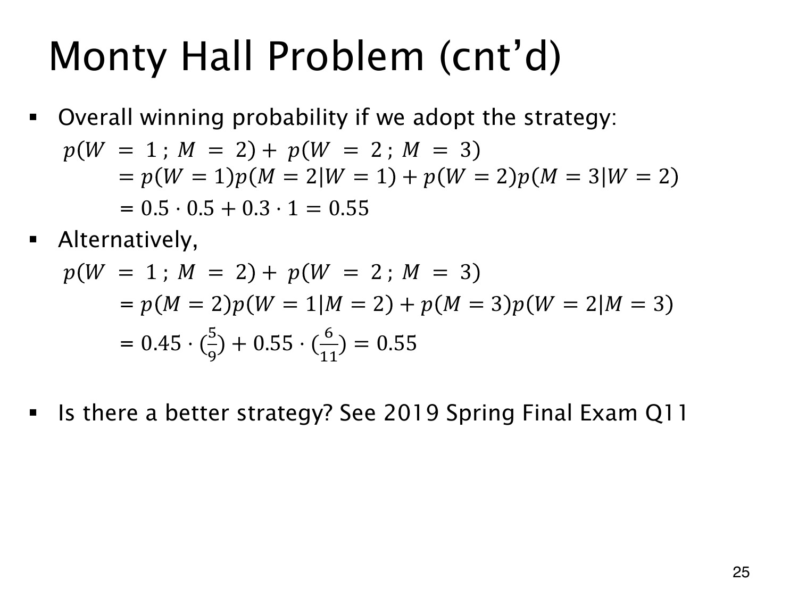

L1.10 · 第 25 页讲解原文
查看这一页课件

先选门 1 的策略为什么是 55%
先选门 1，主持人开门 2 就留在门 1，开门 3 就换到门 2。这样获胜恰好对应两个互斥事件：W=1,M=2 或 W=2,M=3。课件在这里用分号表示两个条件同时成立。
按奖品位置展开联合概率：
p(赢)=p(W=1,M=2)+p(W=2,M=3)=p(W=1)p(M=2∣W=1)+p(W=2)p(M=3∣W=2)=0.5(0.5)+0.3(1)=0.55.
也可以先按开门观察分支，再乘该分支中的条件胜率：
p(赢)=0.4595+0.55116=0.55.
两式算同一组联合事件，只是乘法公式的展开次序不同。
55% 是固定先选门 1 后，依据观察作最优后续选择的胜率。若允许改变初选，还能更好：先选先验最低的门 3，再始终换门，恰好在奖品不在门 3 时赢，概率为 1−0.2=0.8。
课件在末尾引用 2019 Spring Final Q11，供进一步比较策略。